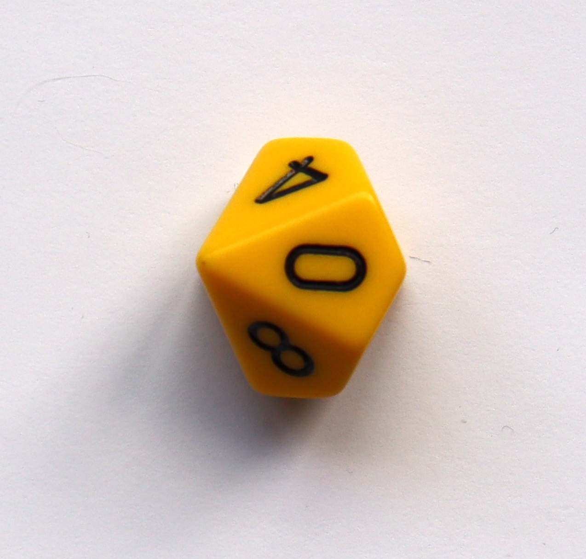

| Day | A1 | A2 | A3 | A4 | A5 | A6 | A7 | A8 | A9 | A10 | A11 | A12 | A13 | A14 | A15 | A16 |
|---|---|---|---|---|---|---|---|---|---|---|---|---|---|---|---|---|
| 1 | 5 | 4 | 4 | 5 | 9 | 8 | 2 | 9 | 1 | 5 | 8 | 2 | 1 | 8 | 2 | 6 |
| 2 | 6 | 5 | 0 | 5 | 2 | 7 | 4 | 4 | 6 | 3 | 9 | 5 | 2 | 5 | 8 | 1 |
| 3 | 2 | 5 | 4 | 9 | 0 | 5 | 8 | 4 | 5 | 9 | 1 | 2 | 8 | 7 | 5 | 3 |
| 4 | 8 | 9 | 2 | 6 | 9 | 0 | 7 | 2 | 5 | 2 | 2 | 2 | 2 | 4 | 7 | 6 |
| 5 | 0 | 4 | 5 | 1 | 3 | 7 | 6 | 3 | 2 | 9 | 5 | 8 | 0 | 6 | 0 | 4 |
| 6 | 7 | 4 | 8 | 9 | 1 | 5 | 1 | 2 | 3 | 6 | 4 | 8 | 5 | 1 | 7 | 5 |
| 7 | 0 | 9 | 8 | 7 | 7 | 3 | 9 | 1 | 7 | 7 | 9 | 9 | 6 | 8 | 4 | 7 |
| 8 | 7 | 2 | 0 | 2 | 4 | 6 | 9 | 2 | 3 | 9 | 5 | 3 | 7 | 1 | 3 | 0 |
| 9 | 8 | 0 | 0 | 3 | 3 | 0 | 0 | 3 | 8 | 6 | 4 | 6 | 0 | 4 | 6 | 7 |
| 10 | 9 | 7 | 1 | 9 | 8 | 1 | 8 | 7 | 0 | 4 | 4 | 7 | 0 | 5 | 6 | 1 |
| 11 | 0 | 9 | 0 | 7 | 0 | 1 | 6 | 0 | 8 | 6 | 0 | 3 | 1 | 9 | 8 | 3 |
| 12 | 1 | 2 | 7 | 8 | 8 | 6 | 1 | 0 | 8 | 3 | 4 | 5 | 8 | 8 | 4 | 9 |
| 13 | 1 | 0 | 8 | 6 | 9 | 2 | 0 | 7 | 7 | 0 | 0 | 7 | 9 | 2 | 3 | 0 |
| 14 | 0 | 0 | 5 | 5 | 4 | 0 | 1 | 7 | 8 | 2 | 0 | 8 | 3 | 2 | 2 | 4 |
| 15 | 6 | 3 | 9 | 6 | 8 | 8 | 7 | 6 | 6 | 4 | 3 | 8 | 7 | 0 | 4 | 3 |
| 16 | 4 | 2 | 6 | 9 | 0 | 0 | 8 | 5 | 3 | 1 | 5 | 1 | 8 | 7 | 6 | 8 |
| 17 | 3 | 6 | 3 | 5 | 3 | 1 | 2 | 4 | 3 | 1 | 6 | 2 | 9 | 5 | 2 | 4 |
| 18 | 0 | 6 | 1 | 9 | 0 | 7 | 9 | 4 | 2 | 0 | 1 | 5 | 8 | 5 | 8 | 1 |
| 19 | 3 | 2 | 2 | 7 | 8 | 2 | 2 | 1 | 2 | 9 | 2 | 5 | 9 | 9 | 6 | 0 |
| 20 | 6 | 3 | 3 | 2 | 6 | 8 | 3 | 9 | 0 | 5 | 7 | 8 | 8 | 3 | 8 | 6 |
| 21 | 8 | 3 | 0 | 0 | 1 | 5 | 3 | 7 | 0 | 9 | 6 | 4 | 1 | 2 | 5 | 0 |
| 22 | 1 | 8 | 7 | 1 | 7 | 1 | 2 | 6 | 4 | 3 | 0 | 0 | 7 | 5 | 6 | 2 |
| 23 | 9 | 2 | 8 | 0 | 3 | 1 | 9 | 1 | 5 | 6 | 5 | 9 | 8 | 4 | 3 | 0 |
| 24 | 6 | 7 | 4 | 9 | 4 | 2 | 0 | 6 | 1 | 0 | 4 | 1 | 0 | 5 | 5 | 9 |
| 25 | 9 | 4 | 3 | 4 | 1 | 6 | 9 | 2 | 4 | 3 | 1 | 8 | 6 | 8 | 0 | 2 |
2 The resampling method
This chapter is a brief introduction to the resampling method of solving problems in probability and statistics. We’re going to dive right in and solve a problem hands-on.
You will see that the resampling method is easy to understand and apply: all it requires is to understand the physical problem. You then simulate a statistical model of the physical problem with techniques that are intuitively obvious, and estimate the probability sought with repeated random sampling.
After finding a solution, we will look at the more conventional formulaic approach, and how that compares. Here’s the spoiler: it requires you to understand complex formulas, and to choose the correct one from many.
After reading this chapter, you will understand why we are excited about the resampling method, and why it will allow you to approach even even hard problems without knowing sophisticated statistic techniques.
2.1 The resampling approach in action
Recall the problem from section Section 1.2 in which the contractor owns 16 ambulances:
You are the manager and part owner of one of several contractors providing ambulances to a hospital. You own 16 ambulances. Based on past experience, the chance that any one ambulance will be unfit for service on any given day is about one in ten. You want to know the chance on a particular day — tomorrow — that three or more of them will be out of action.
The resampling approach produces the estimate as follows.
2.1.1 Randomness from physical methods
We collect 10 coins, and mark one of them with a pen or pencil as being the coin that represents “out-of-order;” the other nine coins stand for “in operation”. For any one ambulance, this set of 10 coins provides a “model” for the one-in-ten chance — a probability of .10 (10 percent) — of it being out of order on a given day. We put the coins into a little jar or bucket.
For ambulance #1, we draw a single coin from the bucket. This coin represents whether that ambulance is going to be broken tomorrow. If we draw the marked coin, we label this ambulance as out-of-order, otherwise we label the ambulance as in-operation. After replacing the coin and shaking the bucket, we repeat the same procedure for ambulance #2, ambulance #3 and so forth. Having repeated the procedure 16 times, we now have a representation of all ambulances for a single day.
We can now repeat this whole process as many times as we like: each time, we come up with a representation for a different day, telling us how many ambulances will be out-of-service on that day.
After collecting evidence for, say, 50 experimental days we determine the proportion of the experimental days on which three or more ambulances are out of order. That proportion is an estimate of the probability that three or more ambulances will be out of order on a given day — the answer we seek. This procedure is an example of Monte Carlo simulation, which is the heart of the resampling method of statistical estimation.
A more direct way to answer this question would be to examine the firm’s actual records for the past 100 days or, better, 500 days (if that’s available) to determine how many days had three or more ambulances out of order. But the resampling procedure described above gives us an estimate even if we do not have such long-term information. This is realistic; it is frequently the case in the real world that we must make estimates on the basis of insufficient history about an event.
A quicker resampling method than the coins could be obtained with 16 ten-sided dice or spinners (like those found in Dungeons & Dragons games). For each die, we identify one of its ten sides as “out-of-order”.
Standard 10-sided dice have the numbers 0 through 9 on their faces, rather than 1 through 10. Figure 2.1 shows a standard 10-sided die:

We decide, arbitrarily, that the 9 side means “out-of-order”. We could even put a little bit of paint on the 9 side to remind us. The die represents an ambulance. If we roll the die, and get this face, this indicates that the ambulance was out of order. If we get any of the other faces — 0 through 8 — this ambulance was in working order. A single throw of all 16 dice will be our experimental trial that represents a single day; we just have to count whether three or more ambulances turn up “out of order”. Figure 2.2 show the result of one trial — throwing 16 dice:
As you can see, the trial in Figure 2.2 gave us a single 9, so there was only one ambulance out of order.
In a hundred throws of the 16 dice — which probably takes less than 5 minutes — we can get a fast and reasonably accurate answer to our question.
2.2 Randomness from your computer
Computers make it easy to generate random numbers for resampling.
What do we mean by random?
Random numbers are numbers where it is impossible to predict which number is coming next. If we ask the computer for a number between 0 and 9, we will get one of the numbers 0 though 9, but we cannot do any better than that in predicting which number it will give us. There is an equal (10%) chance we will get any of the numbers 0 through 9 — just as there is when we roll a fair 10-sided die. We will go into more detail about what exactly we mean by random and chance later in the book (Section 3.8).
We can use random numbers from computers to simulate our problem. For example, we can ask the computer to choose a random number between 0 and 9 to represent one ambulance. Let’s say the number 9 represents “out-of-order” and 0 through 8 “in operation”, then any one random number gives us a trial observation for a single ambulance. To get an experimental trial for a single day we look at 16 numbers and count how many of them are 9. We then look at, say, one hundred sets of 16 numbers and count the proportion of sets whose 16 numbers show three or more ambulances being “out-of-order”. Once again, that proportion estimates the probability that three or more ambulances will be out-of-order on any given day.
Soon we will do all these steps with some R code, but for now, consider Table 2.1. In each row, we placed 16 numbers, each one representing an ambulance. We added 25 such rows, each representing a simulation of one day.
To know how many ambulances were “out of order” on any given day, we count the number of nines in that row. We place the counts in the final column called “#9” (for “number of nines”):
| Day | A1 | A2 | A3 | A4 | A5 | A6 | A7 | A8 | A9 | A10 | A11 | A12 | A13 | A14 | A15 | A16 | #9 |
|---|---|---|---|---|---|---|---|---|---|---|---|---|---|---|---|---|---|
| 1 | 5 | 4 | 4 | 5 | 9 | 8 | 2 | 9 | 1 | 5 | 8 | 2 | 1 | 8 | 2 | 6 | 2 |
| 2 | 6 | 5 | 0 | 5 | 2 | 7 | 4 | 4 | 6 | 3 | 9 | 5 | 2 | 5 | 8 | 1 | 1 |
| 3 | 2 | 5 | 4 | 9 | 0 | 5 | 8 | 4 | 5 | 9 | 1 | 2 | 8 | 7 | 5 | 3 | 2 |
| 4 | 8 | 9 | 2 | 6 | 9 | 0 | 7 | 2 | 5 | 2 | 2 | 2 | 2 | 4 | 7 | 6 | 2 |
| 5 | 0 | 4 | 5 | 1 | 3 | 7 | 6 | 3 | 2 | 9 | 5 | 8 | 0 | 6 | 0 | 4 | 1 |
| 6 | 7 | 4 | 8 | 9 | 1 | 5 | 1 | 2 | 3 | 6 | 4 | 8 | 5 | 1 | 7 | 5 | 1 |
| 7 | 0 | 9 | 8 | 7 | 7 | 3 | 9 | 1 | 7 | 7 | 9 | 9 | 6 | 8 | 4 | 7 | 4 |
| 8 | 7 | 2 | 0 | 2 | 4 | 6 | 9 | 2 | 3 | 9 | 5 | 3 | 7 | 1 | 3 | 0 | 2 |
| 9 | 8 | 0 | 0 | 3 | 3 | 0 | 0 | 3 | 8 | 6 | 4 | 6 | 0 | 4 | 6 | 7 | 1 |
| 10 | 9 | 7 | 1 | 9 | 8 | 1 | 8 | 7 | 0 | 4 | 4 | 7 | 0 | 5 | 6 | 1 | 2 |
| 11 | 0 | 9 | 0 | 7 | 0 | 1 | 6 | 0 | 8 | 6 | 0 | 3 | 1 | 9 | 8 | 3 | 2 |
| 12 | 1 | 2 | 7 | 8 | 8 | 6 | 1 | 0 | 8 | 3 | 4 | 5 | 8 | 8 | 4 | 9 | 1 |
| 13 | 1 | 0 | 8 | 6 | 9 | 2 | 0 | 7 | 7 | 0 | 0 | 7 | 9 | 2 | 3 | 0 | 2 |
| 14 | 0 | 0 | 5 | 5 | 4 | 0 | 1 | 7 | 8 | 2 | 0 | 8 | 3 | 2 | 2 | 4 | 0 |
| 15 | 6 | 3 | 9 | 6 | 8 | 8 | 7 | 6 | 6 | 4 | 3 | 8 | 7 | 0 | 4 | 3 | 1 |
| 16 | 4 | 2 | 6 | 9 | 0 | 0 | 8 | 5 | 3 | 1 | 5 | 1 | 8 | 7 | 6 | 8 | 1 |
| 17 | 3 | 6 | 3 | 5 | 3 | 1 | 2 | 4 | 3 | 1 | 6 | 2 | 9 | 5 | 2 | 4 | 1 |
| 18 | 0 | 6 | 1 | 9 | 0 | 7 | 9 | 4 | 2 | 0 | 1 | 5 | 8 | 5 | 8 | 1 | 2 |
| 19 | 3 | 2 | 2 | 7 | 8 | 2 | 2 | 1 | 2 | 9 | 2 | 5 | 9 | 9 | 6 | 0 | 3 |
| 20 | 6 | 3 | 3 | 2 | 6 | 8 | 3 | 9 | 0 | 5 | 7 | 8 | 8 | 3 | 8 | 6 | 1 |
| 21 | 8 | 3 | 0 | 0 | 1 | 5 | 3 | 7 | 0 | 9 | 6 | 4 | 1 | 2 | 5 | 0 | 1 |
| 22 | 1 | 8 | 7 | 1 | 7 | 1 | 2 | 6 | 4 | 3 | 0 | 0 | 7 | 5 | 6 | 2 | 0 |
| 23 | 9 | 2 | 8 | 0 | 3 | 1 | 9 | 1 | 5 | 6 | 5 | 9 | 8 | 4 | 3 | 0 | 3 |
| 24 | 6 | 7 | 4 | 9 | 4 | 2 | 0 | 6 | 1 | 0 | 4 | 1 | 0 | 5 | 5 | 9 | 2 |
| 25 | 9 | 4 | 3 | 4 | 1 | 6 | 9 | 2 | 4 | 3 | 1 | 8 | 6 | 8 | 0 | 2 | 2 |
Each value in the last column of Table 2.2 is the count of 9s in that row and, therefore, the result from our simulation of one day.
We can estimate how often three or more ambulances would break down by looking for values of three or greater in the last column (labeled “#9”). We find there are 3 rows with three or more in the last column. Finally we divide this number of rows by the number of trials (25) to get an estimate of the proportion of days with three or more breakdowns. The result is 0.12.
2.3 Solving the problem using R
Here we rush ahead to show you how to do this simulation in R.
We go through the R code for the simulation, but we don’t expect you to understand all of it right now. The rest of this book goes into more detail on reading and writing R code, and how you can use R to build your own simulations. Here we just want to show you what this code looks like, to give you an idea of where we are headed.
While you can run the code below on your own computer, for now we only need you to read it and follow along; the text explains what each line of code does.
Coming back to the example
If you are interested, you can come back to this example later, and run it for yourself. To do this, we recommend you read Chapter 4 that explains how to execute notebooks online or on your own computer.
Note 2.1: Notebook: Ambulances
Note 2.2: Comments in code
The first thing to say about the code you will see below is there are some lines that do not do anything; these are the lines beginning with a # character (read # as “hash”). Lines beginning with # are called comments. When R sees a # at the start of a line, it ignores everything else on that line, and skips to the next. Here’s an example of a comment:
# R will completely ignore this text.Because R ignores lines beginning with #, the text after the # is just for us, the humans reading the code. The person writing the code will often use comments to explain what the code is doing.
Our next task is to use R to simulate a single day of ambulances. We will again represent each ambulance by a random number from 0 through 9. 16 of these numbers represents a simulation of all 16 ambulances available to the contractor. We call a simulation of all ambulances for a specific day — one trial.
Recall that we want 16 10-sided dice — one per ambulance. Our dice should be 10-sided, because each ambulance has a 1-in-10 chance of being out of order.
The program to simulate one trial of the ambulances problem therefore begins with these commands:
# Ask R to generate 16 numbers from 0 through 9.
# These are the numbers we will ask R to select from.
# We'll explain the c() part of this line in more detail later in the book.
numbers <- c(0, 1, 2, 3, 4, 5, 6, 7, 8, 9)
# Get 16 values from the *numbers* sequence.
# Store the 16 numbers with the name "a"
# We will explain the replace=TRUE later.
a <- sample(numbers, 16, replace=TRUE)
# The result is a sequence of 16 numbers.
a [1] 6 4 5 3 5 8 4 4 7 1 6 4 4 1 5 3The commands above ask the computer to store the results of the random drawing in a location in the computer’s memory to which we give a name such as a or ambulances or aardvark — the name is up to us.
Next we need to count the number of defective ambulances:
# Count the number of nines in the random numbers.
# The "a == 9" part identifies all the numbers equal to 9.
# The "sum" part counts how many numbers "a == 9" found.
b <- sum(a == 9)
# Show the result
b[1] 0Notice that the code above is exactly the same as the code we built up in steps. But notice too, that the answer we got from this code was slightly different from the answer we got first.
Why did we get a different answer from the same code? See if you can come up with a good answer before reading the explanation below.
Randomness in estimates
This is an essential point — our code uses random numbers to get an estimate of the quantity we want — in this case, the probability of three or more ambulances being out of order. Every run of our code block above will use a different set of random numbers. Therefore, every run of the code will give us a very slightly different number. As you will soon see, we can make our estimate more and more accurate, and less and less different between each run, by doing many trials in each run. Here we did 1000 trials, but we will usually do 10000 trials, to give us a good estimate, that does not vary much from run to run.
Don’t worry about the detail of how each of these commands works — we will cover those details gradually, over the next few chapters. But, we hope that you can see, in principle, how each of the operations that the computer carries out are analogous to the operations that you yourself executed when you solved this problem using the ten-sided dice. This is exactly the procedure that we will use to solve every problem in probability and statistics that we must deal with.
While writing programs like these take a bit of getting used to, it is vastly simpler than the older, more conventional approaches to such problems routinely taught to students.
2.4 How resampling differs from the conventional approach
In the standard approach the student learns to choose and solve a formula. Doing the algebra and arithmetic is quick and easy. The difficulty is in choosing the correct formula. Unless you are a professional statistician, it may take you quite a while to arrive at the correct formula — considerable hard thinking, and perhaps some digging in textbooks. More important than the labor, however, is that you may come up with the wrong formula, and hence obtain the wrong answer. And how would you know if you were wrong?
Most students who have had a standard course in probability and statistics are quick to tell you that it is not easy to find the correct formula, even immediately after finishing a course (or several courses) on the subject. After leaving school or university, it is harder still to choose the right formula. Even many people who have taught statistics at the university level (including this writer) must look at a book to get the correct formula for a problem as simple as the ambulances, and then we are often still not sure we have the right answer. This is the grave disadvantage of the standard approach.
In the past few decades, resampling and other Monte Carlo simulation methods have come to be used extensively in scientific research. But in contrast to the material in this book, simulation has mostly been used in situations so complex that mathematical methods have not yet been developed to handle them. Here are examples of such situations:
Imagine a large train station such as Grand Central Terminal in New York or King’s Cross in London. We are responsible for planning the new station layout so that passengers can move as quickly as possible to and from their trains in rush-hour. It will likely be far too complicated to make formulas to represent the passenger flows, but we could use the computer to simulate passengers, and their movements, and try different potential layouts within the simulation.
The Navy might want to know how long the average ship will have to wait for dock facilities. The time of completion varies from ship to ship, and the number of ships waiting in line for dock work varies over time. This problem can be handled quite easily with the experimental simulation method, but formal mathematical analysis would be difficult or impossible.
What are the best tactics in baseball? Should one bunt? Should one put the best hitter up first, or later? By trying out various tactics with dice or random numbers, Earnshaw Cook (in his book Percentage Baseball), found that it is best never to bunt, and the highest-average hitter should be put up first, in contrast to usual practice. Finding this answer would have been much more difficult with the analytic method.
Which search pattern will yield the best results for a ship searching for a school of fish? Trying out “models” of various search patterns with simulation can provide a fast answer.
What strategy in the game of Monopoly will be most likely to win? The simulation method systematically plays many games (with a computer) testing various strategies to find the best one.
But those five examples are all complex problems. This book and its earlier editions break new ground by using this method for simple rather than complex problems, especially in statistics rather than pure probability, and in teaching beginning rather than advanced students to solve problems this way. (Here it is necessary to emphasize that the resampling method is used to solve the problems themselves rather than as a demonstration device to teach the notions found in the standard conventional approach. Simulation has been used in elementary courses in the past, but only to demonstrate the operation of the analytical mathematical ideas. That is very different than using the resampling approach to solve statistics problems themselves, as is done here.)
Once we get rid of the formulas and tables, we can see that statistics is a matter of clear thinking, not fancy mathematics. Then we can get down to the business of learning how to do that clear statistical thinking, and putting it to work for you. The study of probability is purely mathematics (though not necessarily formulas) and technique. But statistics has to do with meaning. For example, what is the meaning of data showing an association just discovered between a type of behavior and a disease? Of differences in the pay of men and women in your firm? Issues of causation, acceptability of control, and design of experiments cannot be reduced to technique. This is “philosophy” in the fullest sense. Probability and statistics calculations are just one input. Resampling simulation enables us to get past issues of mathematical technique and focus on the crucial statistical elements of statistical problems.
We hope you will find, as you read through the chapters, that the resampling way of thinking is a good way to think about the more traditional statistical methods that some of you may already know. Our approach will be to use resampling to understand the ideas, and then apply this understanding to reason about traditional methods. You may also find that the resampling methods are not only easier to understand — they are often more useful, because they are so general in their application.
End of notebook: Ambulances
ambulances starts at Note 2.1.